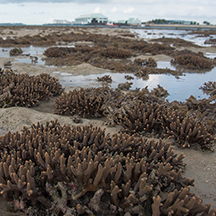
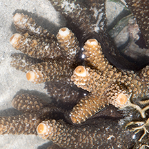
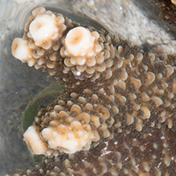
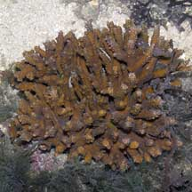
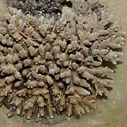
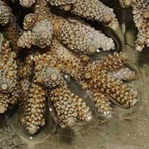
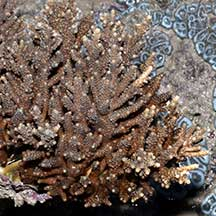
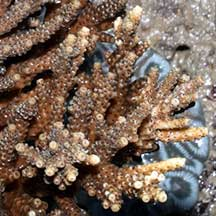
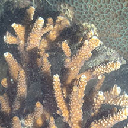
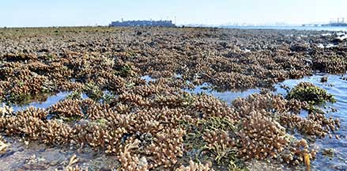

|
|
| hard corals text index | photo index |
| Phylum Cnidaria > Class Anthozoa > Subclass Zoantharia/Hexacorallia > Order Scleractinia > Family Acroporidae > Acropora sp. |
| Stumpy
acropora coral Acropora sp.* Family Acroporidae updated Nov 2019 Where seen? This hard coral with rather stumpy branches and large axial corallites is sometimes on some of our Southern shores, larger colonies are more commonly seen on undisturbed shores. Sometimes forming a field of colonies. Features: Colonies 10-25cm. Short, thick stumpy branches forming a squat bush-like shape. The branches don't interlock. Generally, the axial corallite at the growing tip is very prominent and circular with a depression in the centre so it resembles a round bead. The radial corallites are smoothly rounded and form a rosette around the axial corallite. The radial corallites are regularly arranged along the branch. Colours generally brown. The coral often has various animals hidden among the branches. These include the Broad-barred acropora goby (Gobiodon histrio), shrimps and clams. There are probably several different species on this page. It's hard to distinguish them without close examination of small features and they are grouped by large external features for convenience of display. |
 Terumbu Semakau, Dec 15 |
 |
 |
|
 Sisters Island, Dec 05 |
 Sisters Island, Dec 05  |
 Pulau Hantu, Apr 07  |
 Terumbu Pempang Darat, Jun 10  |
*Species are difficult to positively identify without close examination.
On this website, they are grouped by external features for convenience of display
| Stumpy acropora corals on Singapore shores |
On wildsingapore
flickr
|
| Other sightings on Singapore shores |
 Tanah Merah Ferry Terminal, Jun 22  Photo shared by Loh Kok Sheng on facebook. |
 Big Sisters, Aug 25 |
 Terumbu Pempang Tengah, May 21 |